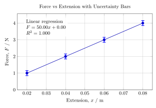
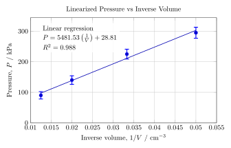

Physics Internal Assessment
A full guide to planning, writing, and evaluating the IB Physics IA: research question alignment, variables, methodology, data processing, uncertainty, graphs, regression, scientific context, evaluation, improvements, and conclusion.
Structure of a Physics IA
Your IA should normally follow a clear scientific structure: research question, theory or model, variables, methodology, raw data, data processing, graphs, uncertainty analysis, evaluation, conclusion, and references.
Research Question
The research question should match the title of the investigation, the data you actually collect, the data you process, and the principal graph used in the analysis.
Variables
Define each variable clearly and explain how it is measured, which instrument is used, what the precision or resolution is, how the independent variable is varied, and how controlled variables are kept constant in practice.
Independent
Explain how it is changed across a useful range and why that range was chosen.
Dependent
State how it is measured and which instrument provides the reading.
Controlled
Explain both why control matters and what you do to keep conditions stable.
Physics Model
Include only the physics that is directly relevant to the investigation. Identify the model, define the main quantities and symbols, explain the expected relationship, and connect the theory to the graph or regression used later.
Methodology
Your experiment must be reproducible. Another student should be able to follow your method and obtain a similar data set. A strong method is clear, justified, appropriate for the physics, and consistent with the variables, theory, and later analysis.
Include
Equipment list, setup diagram, measuring devices, instrument resolution, step-by-step procedure, and number of trials.
Justify
Why the range was chosen, why the instrument is appropriate, why the controls matter, and how the setup reduces uncertainty or improves reliability.
Data Processing
Show clearly how raw measurements became the processed values used in the analysis. That may include averages, transformed variables, gradients, intercepts, percentage differences, uncertainty calculations, and repeated-trial analysis.
Uncertainty Analysis
Distinguish clearly between instrument uncertainty, spread in repeated values, and propagated uncertainty. Every measured quantity should include an uncertainty.
Graphs and Regression
The principal graph should directly answer the research question and match the relationship predicted by the physics model. Axes need labels and units, error bars should be included, and linearization should be justified by the model.

A clear relationship graph with labeled axes, units, and uncertainty bars.

A linearized graph used when the original relationship is not linear in its raw form.
Evaluation and Improvements
Rank limitations by significance instead of listing them randomly. Explain what the problem was, why it mattered, how it affected the data or analysis, whether it produced random or systematic error, and which improvements would realistically strengthen the investigation.
Full IA Guide
The full Physics IA guide below is loaded directly from your markdown file, including equations, tables, graphs, and the detailed checklist.
Loading guide...